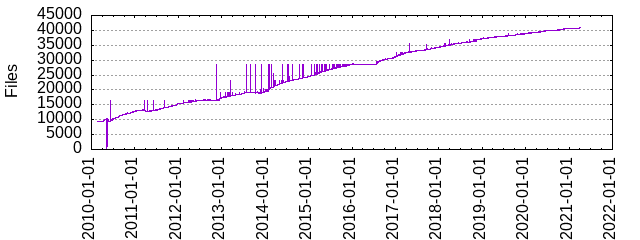

Files
- Total files
- 34453
- Total lines
- 1525222
- Average file size
- 1757.47 bytes

| Extension | Files (%) | Lines (%) | Lines/file |
|---|
| 14116 (40.97%) | 211697 (13.88%) | 14 |
| 1 | 193 (0.56%) | 20521 (1.35%) | 106 |
| 2 | 1 (0.00%) | 27 (0.00%) | 27 |
| 3 | 1 (0.00%) | 53 (0.00%) | 53 |
| 3proxy | 1 (0.00%) | 58 (0.00%) | 58 |
| 4 | 1 (0.00%) | 1414 (0.09%) | 1414 |
| 5 | 2 (0.01%) | 1386 (0.09%) | 693 |
| 6 | 35 (0.10%) | 6879 (0.45%) | 196 |
| 6-patch | 1 (0.00%) | 88 (0.01%) | 88 |
| 7 | 2 (0.01%) | 50 (0.00%) | 25 |
| 8 | 7 (0.02%) | 480 (0.03%) | 68 |
| ATLAS | 4 (0.01%) | 46 (0.00%) | 11 |
| BUILDOPTS | 1 (0.00%) | 60 (0.00%) | 60 |
| CDDL | 2 (0.01%) | 762 (0.05%) | 381 |
| CONFIG | 1 (0.00%) | 71 (0.00%) | 71 |
| FireWallD | 1 (0.00%) | 56 (0.00%) | 56 |
| Makefile | 1 (0.00%) | 1436 (0.09%) | 1436 |
| Plugins | 1 (0.00%) | 10 (0.00%) | 10 |
| README | 2 (0.01%) | 107 (0.01%) | 53 |
| SBo | 28 (0.08%) | 1049 (0.07%) | 37 |
| SLACKWARE | 90 (0.26%) | 3726 (0.24%) | 41 |
| SlackBuild | 6906 (20.04%) | 673564 (44.16%) | 97 |
| Slackware | 43 (0.12%) | 1900 (0.12%) | 44 |
| StarDict | 1 (0.00%) | 380 (0.02%) | 380 |
| WARNING | 1 (0.00%) | 5 (0.00%) | 5 |
| Xspice | 1 (0.00%) | 11 (0.00%) | 11 |
| acl | 1 (0.00%) | 5 (0.00%) | 5 |
| activemq | 2 (0.01%) | 106 (0.01%) | 53 |
| add | 3 (0.01%) | 21 (0.00%) | 7 |
| afterstep | 1 (0.00%) | 20 (0.00%) | 20 |
| aiccu | 1 (0.00%) | 53 (0.00%) | 53 |
| alias | 1 (0.00%) | 8 (0.00%) | 8 |
| allow | 1 (0.00%) | 12 (0.00%) | 12 |
| append | 1 (0.00%) | 25 (0.00%) | 25 |
| arpwatch | 1 (0.00%) | 63 (0.00%) | 63 |
| asd | 1 (0.00%) | 39 (0.00%) | 39 |
| asm | 1 (0.00%) | 60 (0.00%) | 60 |
| asterisk | 1 (0.00%) | 8 (0.00%) | 8 |
| atlas | 1 (0.00%) | 70 (0.00%) | 70 |
| awesome | 1 (0.00%) | 20 (0.00%) | 20 |
| barnyard2 | 1 (0.00%) | 49 (0.00%) | 49 |
| beta | 1 (0.00%) | 11 (0.00%) | 11 |
| bitlbee | 1 (0.00%) | 96 (0.01%) | 96 |
| boto | 1 (0.00%) | 26 (0.00%) | 26 |
| bspwm | 1 (0.00%) | 22 (0.00%) | 22 |
| btsync | 1 (0.00%) | 29 (0.00%) | 29 |
| build | 1 (0.00%) | 81 (0.01%) | 81 |
| burp | 1 (0.00%) | 63 (0.00%) | 63 |
| bz2 | 2 (0.01%) | 41 (0.00%) | 20 |
| c | 4 (0.01%) | 1148 (0.08%) | 287 |
| c-icap | 1 (0.00%) | 38 (0.00%) | 38 |
| cassandra | 1 (0.00%) | 76 (0.00%) | 76 |
| cdemud | 1 (0.00%) | 144 (0.01%) | 144 |
| cfg | 8 (0.02%) | 660 (0.04%) | 82 |
| cherokee | 1 (0.00%) | 98 (0.01%) | 98 |
| clamav | 2 (0.01%) | 76 (0.00%) | 38 |
| clamsmtpd | 1 (0.00%) | 55 (0.00%) | 55 |
| cmake | 1 (0.00%) | 21 (0.00%) | 21 |
| cntlm | 1 (0.00%) | 63 (0.00%) | 63 |
| collectd | 1 (0.00%) | 74 (0.00%) | 74 |
| conf | 90 (0.26%) | 14377 (0.94%) | 159 |
| conf-mdns | 1 (0.00%) | 42 (0.00%) | 42 |
| connmand | 1 (0.00%) | 33 (0.00%) | 33 |
| cron | 7 (0.02%) | 98 (0.01%) | 14 |
| crossguid | 1 (0.00%) | 33 (0.00%) | 33 |
| csh | 45 (0.13%) | 220 (0.01%) | 4 |
| css | 2 (0.01%) | 56 (0.00%) | 28 |
| ctl | 1 (0.00%) | 125 (0.01%) | 125 |
| ctwm | 1 (0.00%) | 32 (0.00%) | 32 |
| custom | 1 (0.00%) | 76 (0.00%) | 76 |
| cwm | 2 (0.01%) | 36 (0.00%) | 18 |
| d | 1 (0.00%) | 10 (0.00%) | 10 |
| d52 | 1 (0.00%) | 102 (0.01%) | 102 |
| dat | 1 (0.00%) | 1309 (0.09%) | 1309 |
| db | 1 (0.00%) | 523 (0.03%) | 523 |
| ddclient | 1 (0.00%) | 43 (0.00%) | 43 |
| default | 9 (0.03%) | 282 (0.02%) | 31 |
| defconfig | 1 (0.00%) | 317 (0.02%) | 317 |
| desktop | 606 (1.76%) | 6972 (0.46%) | 11 |
| dictd | 1 (0.00%) | 71 (0.00%) | 71 |
| diff | 433 (1.26%) | 51759 (3.39%) | 119 |
| diffs | 1 (0.00%) | 28 (0.00%) | 28 |
| directory | 13 (0.04%) | 1826 (0.12%) | 140 |
| dkimproxy | 1 (0.00%) | 156 (0.01%) | 156 |
| docker | 1 (0.00%) | 86 (0.01%) | 86 |
| documented | 1 (0.00%) | 7806 (0.51%) | 7806 |
| dom0 | 1 (0.00%) | 77 (0.01%) | 77 |
| domU | 1 (0.00%) | 41 (0.00%) | 41 |
| dovecot | 1 (0.00%) | 55 (0.00%) | 55 |
| dpatch | 13 (0.04%) | 790 (0.05%) | 60 |
| dwm | 1 (0.00%) | 32 (0.00%) | 32 |
| e16 | 1 (0.00%) | 21 (0.00%) | 21 |
| eclass | 1 (0.00%) | 84 (0.01%) | 84 |
| ede | 1 (0.00%) | 31 (0.00%) | 31 |
| env | 1 (0.00%) | 19 (0.00%) | 19 |
| ethercodes | 1 (0.00%) | 26 (0.00%) | 26 |
| example | 2 (0.01%) | 37 (0.00%) | 18 |
| exclude | 1 (0.00%) | 6 (0.00%) | 6 |
| exim | 1 (0.00%) | 28 (0.00%) | 28 |
| fail2ban | 1 (0.00%) | 69 (0.00%) | 69 |
| fcron | 1 (0.00%) | 21 (0.00%) | 21 |
| ffproxy | 1 (0.00%) | 40 (0.00%) | 40 |
| firehol | 1 (0.00%) | 33 (0.00%) | 33 |
| freeswitch | 2 (0.01%) | 79 (0.01%) | 39 |
| fstab | 1 (0.00%) | 16 (0.00%) | 16 |
| fvwm95 | 1 (0.00%) | 29 (0.00%) | 29 |
| g15daemon | 1 (0.00%) | 74 (0.00%) | 74 |
| glassfish | 1 (0.00%) | 64 (0.00%) | 64 |
| gpr | 1 (0.00%) | 8 (0.00%) | 8 |
| gsad | 1 (0.00%) | 47 (0.00%) | 47 |
| guix | 1 (0.00%) | 82 (0.01%) | 82 |
| gz | 59 (0.17%) | 558 (0.04%) | 9 |
| h | 4 (0.01%) | 1515 (0.10%) | 378 |
| hamachi | 1 (0.00%) | 36 (0.00%) | 36 |
| haproxy | 1 (0.00%) | 84 (0.01%) | 84 |
| haveged | 1 (0.00%) | 47 (0.00%) | 47 |
| hdapsd | 1 (0.00%) | 86 (0.01%) | 86 |
| hex | 1 (0.00%) | 4 (0.00%) | 4 |
| hhvm | 1 (0.00%) | 161 (0.01%) | 161 |
| hiawatha | 1 (0.00%) | 80 (0.01%) | 80 |
| hook | 1 (0.00%) | 9 (0.00%) | 9 |
| hostapd | 1 (0.00%) | 42 (0.00%) | 42 |
| htm | 1 (0.00%) | 171 (0.01%) | 171 |
| html | 4 (0.01%) | 898 (0.06%) | 224 |
| i3 | 1 (0.00%) | 20 (0.00%) | 20 |
| i386 | 2 (0.01%) | 16 (0.00%) | 8 |
| i686 | 2 (0.01%) | 7434 (0.49%) | 3717 |
| i8kmon | 1 (0.00%) | 68 (0.00%) | 68 |
| iceccd | 1 (0.00%) | 50 (0.00%) | 50 |
| ices-cc | 1 (0.00%) | 80 (0.01%) | 80 |
| icewm | 1 (0.00%) | 31 (0.00%) | 31 |
| ico | 1 (0.00%) | 192 (0.01%) | 192 |
| ignore | 1 (0.00%) | 31 (0.00%) | 31 |
| in | 8 (0.02%) | 605 (0.04%) | 75 |
| inc | 1 (0.00%) | 47 (0.00%) | 47 |
| incrond | 1 (0.00%) | 62 (0.00%) | 62 |
| info | 6906 (20.04%) | 71160 (4.67%) | 10 |
| ini | 23 (0.07%) | 775 (0.05%) | 33 |
| init | 1 (0.00%) | 30 (0.00%) | 30 |
| ion | 1 (0.00%) | 19 (0.00%) | 19 |
| ioquake3 | 1 (0.00%) | 3 (0.00%) | 3 |
| iortcw | 1 (0.00%) | 3 (0.00%) | 3 |
| iortcw-mp | 1 (0.00%) | 3 (0.00%) | 3 |
| issues | 2 (0.01%) | 58 (0.00%) | 29 |
| jabberd2 | 1 (0.00%) | 40 (0.00%) | 40 |
| jboss-as | 1 (0.00%) | 145 (0.01%) | 145 |
| jenkins | 2 (0.01%) | 97 (0.01%) | 48 |
| jpg | 2 (0.01%) | 575 (0.04%) | 287 |
| jwm | 1 (0.00%) | 26 (0.00%) | 26 |
| kadmind | 2 (0.01%) | 88 (0.01%) | 44 |
| kafka | 1 (0.00%) | 40 (0.00%) | 40 |
| kdc | 1 (0.00%) | 34 (0.00%) | 34 |
| kde | 1 (0.00%) | 14 (0.00%) | 14 |
| kea | 1 (0.00%) | 23 (0.00%) | 23 |
| keepalived | 1 (0.00%) | 79 (0.01%) | 79 |
| kmk | 2 (0.01%) | 47 (0.00%) | 23 |
| kpasswdd | 1 (0.00%) | 34 (0.00%) | 34 |
| krb5 | 2 (0.01%) | 111 (0.01%) | 55 |
| krb5kdc | 1 (0.00%) | 54 (0.00%) | 54 |
| lang | 3 (0.01%) | 57 (0.00%) | 19 |
| launcher | 1 (0.00%) | 5 (0.00%) | 5 |
| libvirt | 1 (0.00%) | 241 (0.02%) | 241 |
| lighttpd | 1 (0.00%) | 78 (0.01%) | 78 |
| lighttpd2 | 1 (0.00%) | 70 (0.00%) | 70 |
| list | 2 (0.01%) | 131 (0.01%) | 65 |
| lldpd | 1 (0.00%) | 33 (0.00%) | 33 |
| login | 1 (0.00%) | 77 (0.01%) | 77 |
| logrotate | 39 (0.11%) | 459 (0.03%) | 11 |
| lua | 3 (0.01%) | 51 (0.00%) | 17 |
| lumina | 1 (0.00%) | 29 (0.00%) | 29 |
| lxde | 1 (0.00%) | 21 (0.00%) | 21 |
| m4 | 1 (0.00%) | 203 (0.01%) | 203 |
| mailman | 1 (0.00%) | 54 (0.00%) | 54 |
| man | 2 (0.01%) | 81 (0.01%) | 40 |
| mcwm | 1 (0.00%) | 18 (0.00%) | 18 |
| mediatomb | 1 (0.00%) | 84 (0.01%) | 84 |
| memcached | 1 (0.00%) | 42 (0.00%) | 42 |
| menu | 2 (0.01%) | 163 (0.01%) | 81 |
| midori | 1 (0.00%) | 5 (0.00%) | 5 |
| mime | 1 (0.00%) | 5 (0.00%) | 5 |
| miredo | 1 (0.00%) | 88 (0.01%) | 88 |
| mod | 2 (0.01%) | 338 (0.02%) | 169 |
| models | 1 (0.00%) | 121 (0.01%) | 121 |
| mongodb | 1 (0.00%) | 68 (0.00%) | 68 |
| monit | 1 (0.00%) | 67 (0.00%) | 67 |
| movies | 1 (0.00%) | 17 (0.00%) | 17 |
| mt-daapd | 1 (0.00%) | 35 (0.00%) | 35 |
| munin-node | 1 (0.00%) | 22 (0.00%) | 22 |
| murmur | 1 (0.00%) | 41 (0.00%) | 41 |
| musca | 1 (0.00%) | 21 (0.00%) | 21 |
| museekd | 1 (0.00%) | 105 (0.01%) | 105 |
| netdata | 1 (0.00%) | 45 (0.00%) | 45 |
| new | 42 (0.12%) | 1649 (0.11%) | 39 |
| nginx | 1 (0.00%) | 96 (0.01%) | 96 |
| niceshaper | 1 (0.00%) | 89 (0.01%) | 89 |
| nix | 1 (0.00%) | 75 (0.00%) | 75 |
| nopurge | 1 (0.00%) | 56 (0.00%) | 56 |
| notion | 1 (0.00%) | 30 (0.00%) | 30 |
| nox | 1 (0.00%) | 17 (0.00%) | 17 |
| nrpe | 1 (0.00%) | 79 (0.01%) | 79 |
| nsca | 1 (0.00%) | 80 (0.01%) | 80 |
| nsd | 1 (0.00%) | 50 (0.00%) | 50 |
| ntop | 1 (0.00%) | 95 (0.01%) | 95 |
| online | 1 (0.00%) | 28 (0.00%) | 28 |
| openbox | 1 (0.00%) | 27 (0.00%) | 27 |
| openctd | 1 (0.00%) | 64 (0.00%) | 64 |
| opendkim | 1 (0.00%) | 77 (0.01%) | 77 |
| openfire | 1 (0.00%) | 95 (0.01%) | 95 |
| openldap | 1 (0.00%) | 100 (0.01%) | 100 |
| openntpd | 1 (0.00%) | 43 (0.00%) | 43 |
| opensmtpd | 1 (0.00%) | 35 (0.00%) | 35 |
| openvasmd | 1 (0.00%) | 47 (0.00%) | 47 |
| openvassd | 1 (0.00%) | 55 (0.00%) | 55 |
| order | 1 (0.00%) | 3 (0.00%) | 3 |
| oss | 2 (0.01%) | 46 (0.00%) | 23 |
| pam | 1 (0.00%) | 3 (0.00%) | 3 |
| patch | 1160 (3.37%) | 106870 (7.01%) | 92 |
| pc | 6 (0.02%) | 53 (0.00%) | 8 |
| pcscd | 1 (0.00%) | 66 (0.00%) | 66 |
| pdextended | 1 (0.00%) | 108 (0.01%) | 108 |
| pdf | 2 (0.01%) | 809 (0.05%) | 404 |
| pdnsd | 1 (0.00%) | 78 (0.01%) | 78 |
| pekwm | 1 (0.00%) | 32 (0.00%) | 32 |
| pgbouncer | 1 (0.00%) | 94 (0.01%) | 94 |
| phar | 1 (0.00%) | 87082 (5.71%) | 87082 |
| pl | 4 (0.01%) | 430 (0.03%) | 107 |
| png | 278 (0.81%) | 11940 (0.78%) | 42 |
| pod | 34 (0.10%) | 5068 (0.33%) | 149 |
| policy | 1 (0.00%) | 20 (0.00%) | 20 |
| policyd | 1 (0.00%) | 62 (0.00%) | 62 |
| policyd2 | 2 (0.01%) | 75 (0.00%) | 37 |
| polipo | 1 (0.00%) | 31 (0.00%) | 31 |
| postfix | 1 (0.00%) | 67 (0.00%) | 67 |
| postgresql | 1 (0.00%) | 35 (0.00%) | 35 |
| postgrey | 1 (0.00%) | 42 (0.00%) | 42 |
| postinst | 1 (0.00%) | 13 (0.00%) | 13 |
| predefs | 2 (0.01%) | 506 (0.03%) | 253 |
| prefs | 1 (0.00%) | 11 (0.00%) | 11 |
| preload | 1 (0.00%) | 62 (0.00%) | 62 |
| psd | 1 (0.00%) | 47 (0.00%) | 47 |
| ptokax | 1 (0.00%) | 41 (0.00%) | 41 |
| pure-ftpd | 1 (0.00%) | 49 (0.00%) | 49 |
| py | 10 (0.03%) | 4027 (0.26%) | 402 |
| qemu-ga | 1 (0.00%) | 45 (0.00%) | 45 |
| qtile | 1 (0.00%) | 30 (0.00%) | 30 |
| quagga | 1 (0.00%) | 43 (0.00%) | 43 |
| r2e | 1 (0.00%) | 4 (0.00%) | 4 |
| rabbitmq | 1 (0.00%) | 45 (0.00%) | 45 |
| ratpoison | 1 (0.00%) | 20 (0.00%) | 20 |
| razorqt | 1 (0.00%) | 19 (0.00%) | 19 |
| rb | 1 (0.00%) | 283 (0.02%) | 283 |
| readme | 1 (0.00%) | 5 (0.00%) | 5 |
| rio | 1 (0.00%) | 19 (0.00%) | 19 |
| rom | 1 (0.00%) | 35 (0.00%) | 35 |
| root | 1 (0.00%) | 22 (0.00%) | 22 |
| rst | 21 (0.06%) | 2890 (0.19%) | 137 |
| rsyslogd | 1 (0.00%) | 65 (0.00%) | 65 |
| rules | 10 (0.03%) | 71 (0.00%) | 7 |
| rxstack | 1 (0.00%) | 49 (0.00%) | 49 |
| sabnzbd | 1 (0.00%) | 22 (0.00%) | 22 |
| sample | 5 (0.01%) | 261 (0.02%) | 52 |
| sbo | 1 (0.00%) | 7 (0.00%) | 7 |
| script | 1 (0.00%) | 3 (0.00%) | 3 |
| sd | 1 (0.00%) | 111 (0.01%) | 111 |
| sed | 1 (0.00%) | 81 (0.01%) | 81 |
| server | 1 (0.00%) | 23 (0.00%) | 23 |
| serviio | 1 (0.00%) | 53 (0.00%) | 53 |
| setup | 2 (0.01%) | 67 (0.00%) | 33 |
| sh | 2702 (7.84%) | 28949 (1.90%) | 10 |
| shibd | 1 (0.00%) | 49 (0.00%) | 49 |
| sickrage | 1 (0.00%) | 107 (0.01%) | 107 |
| sks | 1 (0.00%) | 60 (0.00%) | 60 |
| slack | 1 (0.00%) | 75 (0.00%) | 75 |
| slack64 | 1 (0.00%) | 4 (0.00%) | 4 |
| slackware | 1 (0.00%) | 78 (0.01%) | 78 |
| sleepd | 1 (0.00%) | 68 (0.00%) | 68 |
| snort | 1 (0.00%) | 57 (0.00%) | 57 |
| sonarqube | 1 (0.00%) | 564 (0.04%) | 564 |
| source | 1 (0.00%) | 67 (0.00%) | 67 |
| spawn-fcgi | 1 (0.00%) | 29 (0.00%) | 29 |
| spectrwm | 1 (0.00%) | 19 (0.00%) | 19 |
| sql | 1 (0.00%) | 64 (0.00%) | 64 |
| squid | 1 (0.00%) | 87 (0.01%) | 87 |
| sshblock | 1 (0.00%) | 56 (0.00%) | 56 |
| sshguard | 1 (0.00%) | 45 (0.00%) | 45 |
| sslh | 1 (0.00%) | 53 (0.00%) | 53 |
| subtle | 1 (0.00%) | 21 (0.00%) | 21 |
| suricata | 1 (0.00%) | 53 (0.00%) | 53 |
| svg | 13 (0.04%) | 2678 (0.18%) | 206 |
| svxlink | 1 (0.00%) | 57 (0.00%) | 57 |
| sxserver | 1 (0.00%) | 114 (0.01%) | 114 |
| syncthing | 1 (0.00%) | 53 (0.00%) | 53 |
| syslog-ng | 1 (0.00%) | 81 (0.01%) | 81 |
| tests | 1 (0.00%) | 7 (0.00%) | 7 |
| tgz | 1 (0.00%) | 35 (0.00%) | 35 |
| thinkfan | 1 (0.00%) | 76 (0.00%) | 76 |
| thttpd | 1 (0.00%) | 79 (0.01%) | 79 |
| timidity | 1 (0.00%) | 25 (0.00%) | 25 |
| tinc | 1 (0.00%) | 40 (0.00%) | 40 |
| tlpdb | 1 (0.00%) | 205539 (13.48%) | 205539 |
| tlpkg | 1 (0.00%) | 17 (0.00%) | 17 |
| tomcat | 1 (0.00%) | 81 (0.01%) | 81 |
| tor | 2 (0.01%) | 138 (0.01%) | 69 |
| tpl | 3 (0.01%) | 417 (0.03%) | 139 |
| trytond | 1 (0.00%) | 48 (0.00%) | 48 |
| txt | 61 (0.18%) | 22965 (1.51%) | 376 |
| unbound | 1 (0.00%) | 118 (0.01%) | 118 |
| unixy | 1 (0.00%) | 209 (0.01%) | 209 |
| ups | 1 (0.00%) | 73 (0.00%) | 73 |
| uptimed | 1 (0.00%) | 59 (0.00%) | 59 |
| uwm | 1 (0.00%) | 25 (0.00%) | 25 |
| varnishd | 1 (0.00%) | 78 (0.01%) | 78 |
| vde2 | 1 (0.00%) | 74 (0.00%) | 74 |
| verm | 1 (0.00%) | 42 (0.00%) | 42 |
| vmtoolsd | 1 (0.00%) | 58 (0.00%) | 58 |
| vnstat | 1 (0.00%) | 70 (0.00%) | 70 |
| webmin | 1 (0.00%) | 81 (0.01%) | 81 |
| wildfly | 1 (0.00%) | 145 (0.01%) | 145 |
| wmii | 1 (0.00%) | 31 (0.00%) | 31 |
| wrapper | 6 (0.02%) | 131 (0.01%) | 21 |
| x2goserver | 1 (0.00%) | 26 (0.00%) | 26 |
| x86_64 | 4 (0.01%) | 7281 (0.48%) | 1820 |
| xinetd | 1 (0.00%) | 105 (0.01%) | 105 |
| xinit | 1 (0.00%) | 5 (0.00%) | 5 |
| xml | 19 (0.06%) | 626 (0.04%) | 32 |
| xml-sample | 2 (0.01%) | 126 (0.01%) | 63 |
| xmonad | 1 (0.00%) | 19 (0.00%) | 19 |
| xpm | 55 (0.16%) | 25794 (1.69%) | 468 |
| xsa | 1 (0.00%) | 1 (0.00%) | 1 |
| xz | 1 (0.00%) | 984 (0.06%) | 984 |
| yadifa | 1 (0.00%) | 53 (0.00%) | 53 |
| zfs | 1 (0.00%) | 127 (0.01%) | 127 |
| znc | 1 (0.00%) | 63 (0.00%) | 63 |
| zone | 1 (0.00%) | 11 (0.00%) | 11 |
| zookeeper | 1 (0.00%) | 42 (0.00%) | 42 |